想象一下，我们正在玩一款3D游戏或者观看一部动画电影。
计算机是如何知道哪些物体在前，哪些物体在后？
如果把远的物体画在了近的物体前面，会发生什么？
这就是我们今天要解决的核心问题：隐面消除。
在本节课结束后，你将能够：
在渲染一个三维场景时，如果两个不透明的物体在屏幕上占据了相同的像素位置，我们应该显示哪个物体的颜色？
在计算机图形学中，为了模拟真实世界的光线遮挡效果，当多个物体投影到同一像素时，我们通常只显示最靠近观察者（相机）的那个物体。这正是隐面消除算法要解决的核心问题。
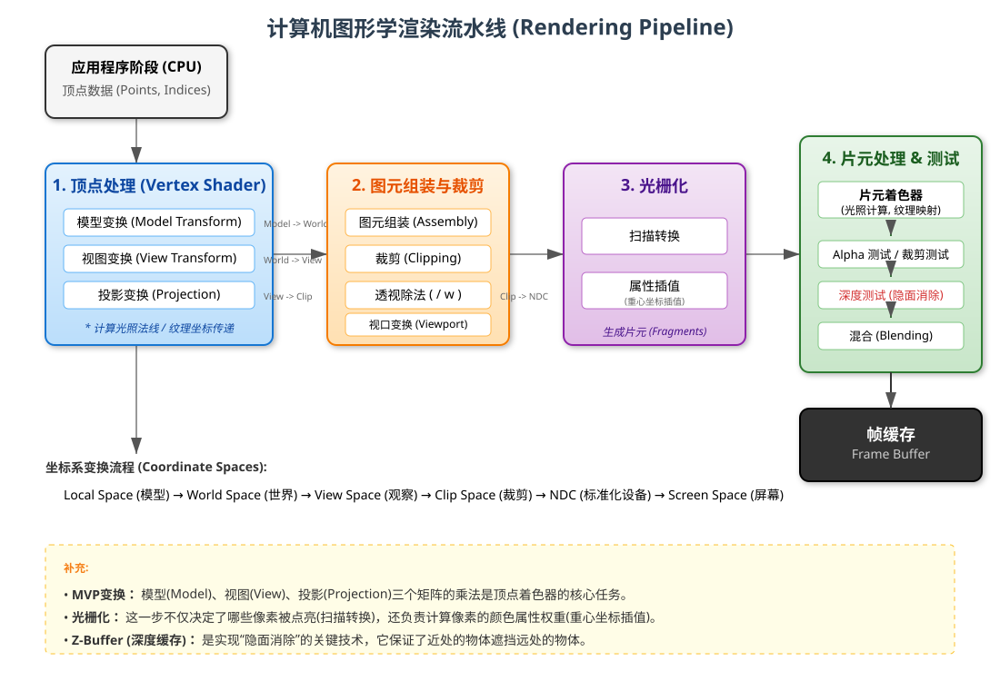
在三维场景中，物体之间存在遮挡关系。我们需要决定哪些部分是可见的，哪些是被遮挡的。
隐面消除 (Hidden Surface Removal, HSR)，也称为可见面判别 (Visible Surface Determination)，是图形学中的核心问题之一。
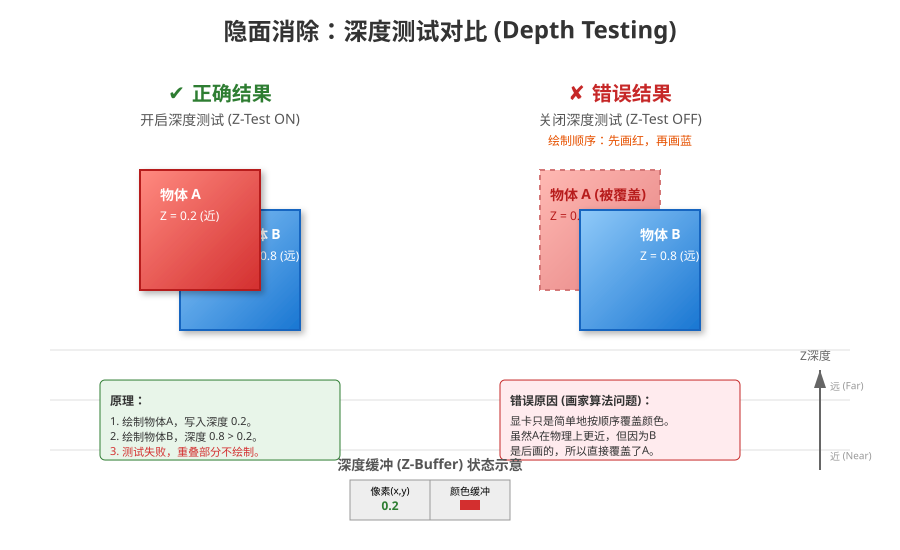
核心思想： 对于封闭的凸多面体，背向观察者的面是不可见的，可以直接丢弃，不进行后续的渲染计算。
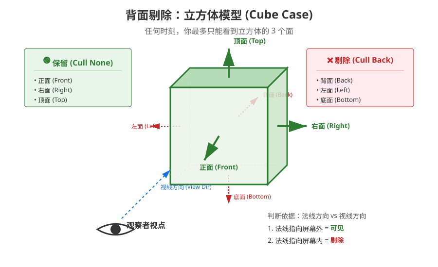
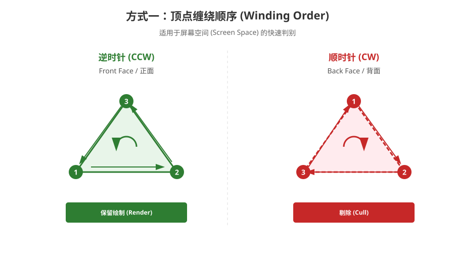
判定方法： 利用多边形的法向量 $\vec{n}$ 和 视线向量 $\vec{v}$ (从物体指向相机)。
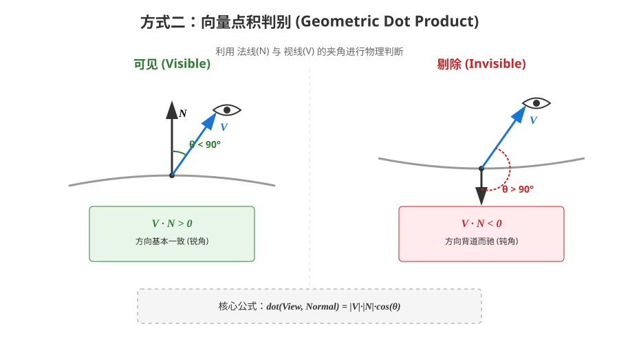
注意： 上述方法仅适用于凸多边形，对于凹多边形，可能存在多个法线方向，无法使用上述方法进行判断
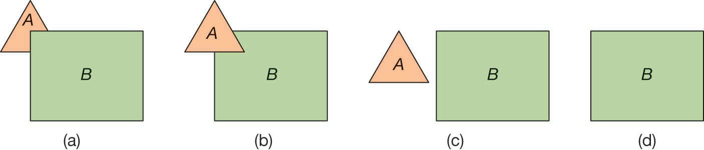
基本思想： 像油画画家一样，先画背景（远的），再画前景（近的）。遵循从后往前的顺序绘制多边形，保证后方的多边形被前方的多边形遮挡
步骤：
优点： 简单，不需要额外的硬件支持
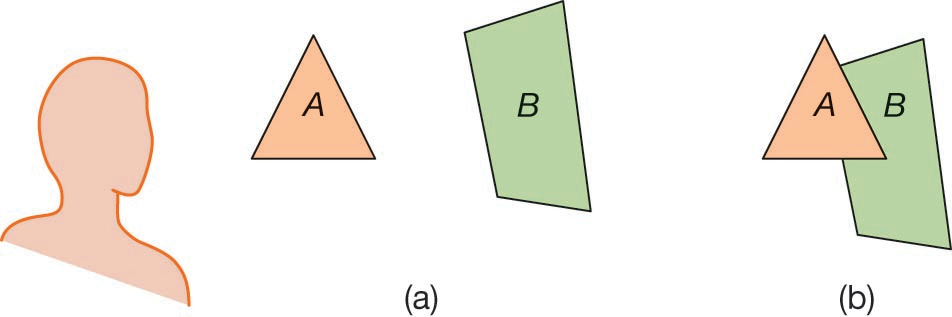
画家算法要求对多边形按深度进行排序
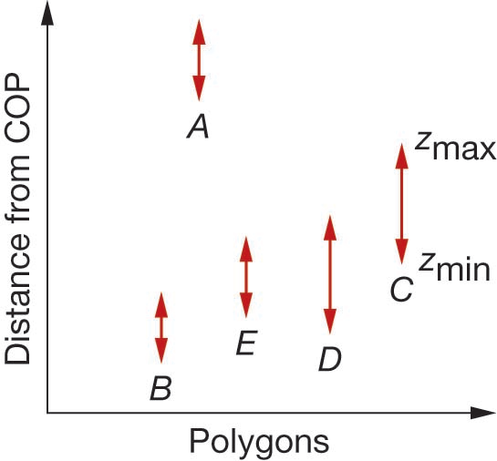
如果多边形A位于所有的多边形后，可直接绘制该多边形
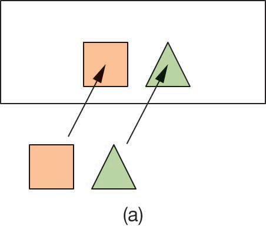
若多边形在$Z$方向上有重叠，但在$X$和$Y$方向上都没重叠，可以在几个方向上分别独立绘制
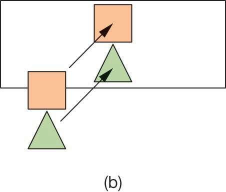
多边形可能相交，或者深度范围重叠，难以简单排序
所有方向上均有重叠，在一个方向上完全位于另一个的一侧
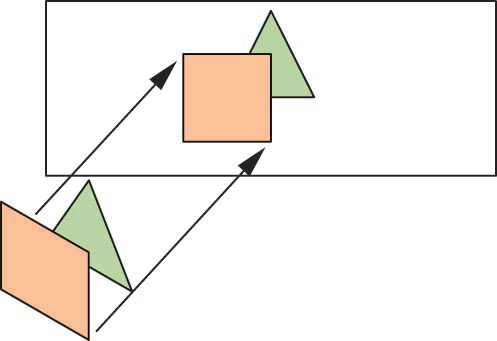
循环重叠(Cyclic Overlap)
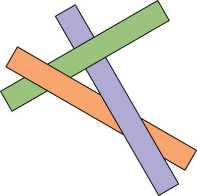
穿透重叠(Penetration)
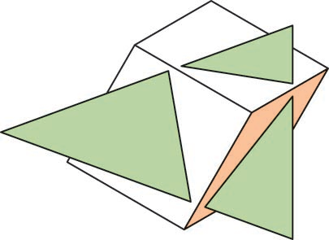
解决方法：需要分割多边形，增加计算复杂度
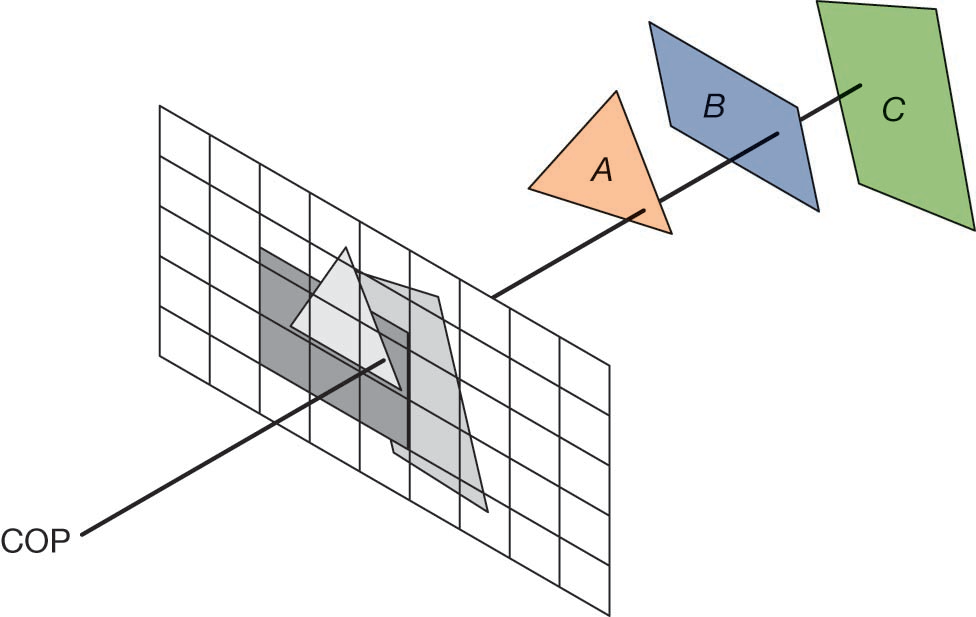
这是现代图形硬件（GPU）的标准做法
核心思想： 在像素级别进行深度比较
需要两个缓冲区：
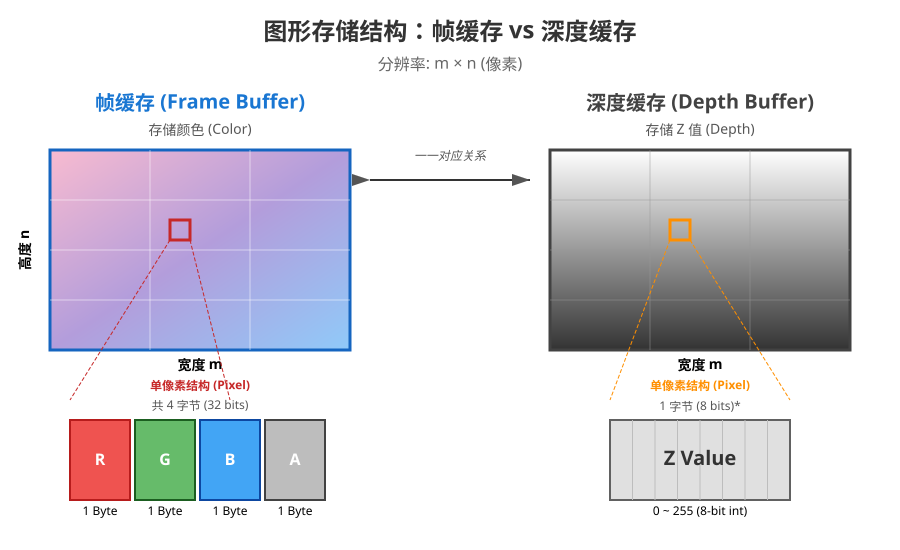
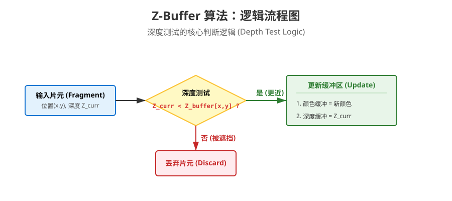
if (z < ZBuffer[x][y]) {
ZBuffer[x][y] = z; // 更新深度
FrameBuffer[x][y] = color; // 更新颜色
}
问题：以下哪种隐面消除算法最容易受到“循环遮挡”问题的困扰？
画家算法依赖于对场景中的多边形进行深度排序，然后从远到近绘制。当出现A遮挡B、B遮挡C、C又遮挡A的“循环遮挡”情况时，无法确定一个绝对的绘制顺序，导致算法失效。而Z-Buffer算法在像素级别比较深度，天然地解决了这个问题。